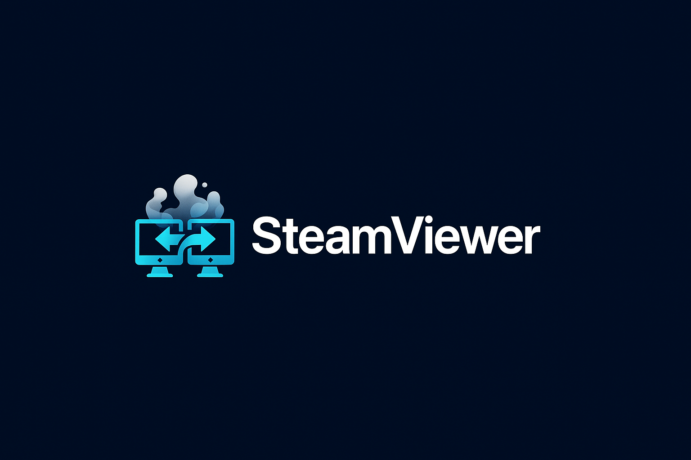

Fast, encrypted screen sharing for Windows. No account, no subscription, no data collection. Just connect.
DTLS-SRTP encryption on every connection. Passwords hashed with BLAKE3 before they ever leave your machine.
Direct peer-to-peer connections with hardware-accelerated H.264 encoding. No traffic routed through third-party servers.
Launch the app, share your session ID and password. That's it. No sign-ups, no email, no tracking.
Mouse, keyboard, clipboard sync, and elevated access for admin tools. Control UAC prompts and the lock screen remotely.
Connect to multiple machines at once. Each session runs in its own tab with independent controls.
Connects over LAN or internet. Automatic NAT traversal with relay fallback when direct connections aren't possible.
Download a single .exe, run it on both machines, and connect in seconds. The launcher auto-extracts and handles updates.